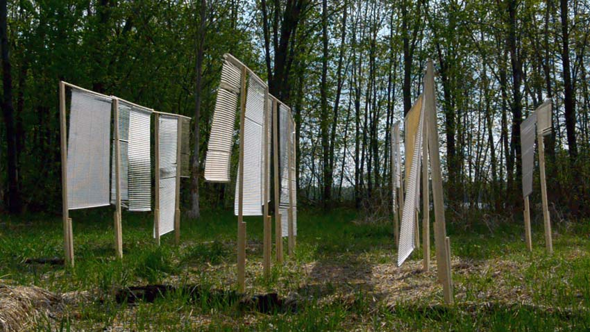
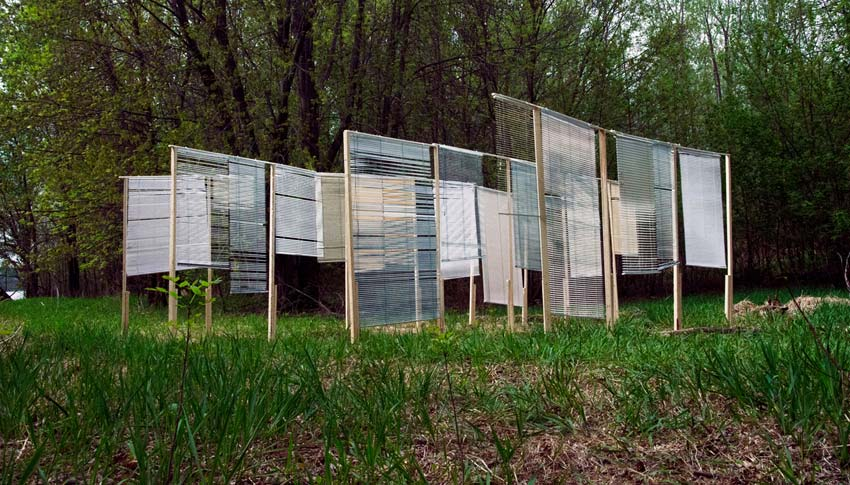
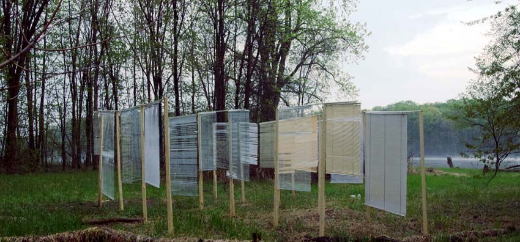

Jessica Arseneau
::: portfolio
Images and projects
Stratas
2015
Temporary installation in a wasteland
Laval, Montreal's suburb, QC




The installation is mainly conceived of window blinds and lumbers. The positioning of the pieces of wood trains forms the basic structure which, with the depth and the perspective, evokes a kind of architecture. The intention is to move blinds outside where it divides no more spaces. By bringing this object which normally divides the private and public space, here, this open construction blurs the borders of an individual and social imaginary by evoking also an ambiguity between the inside and the outside (by example: of a body, a building, a territory).
While the wind blows in slats, the window blinds make a choreography from where emerges a poetry.